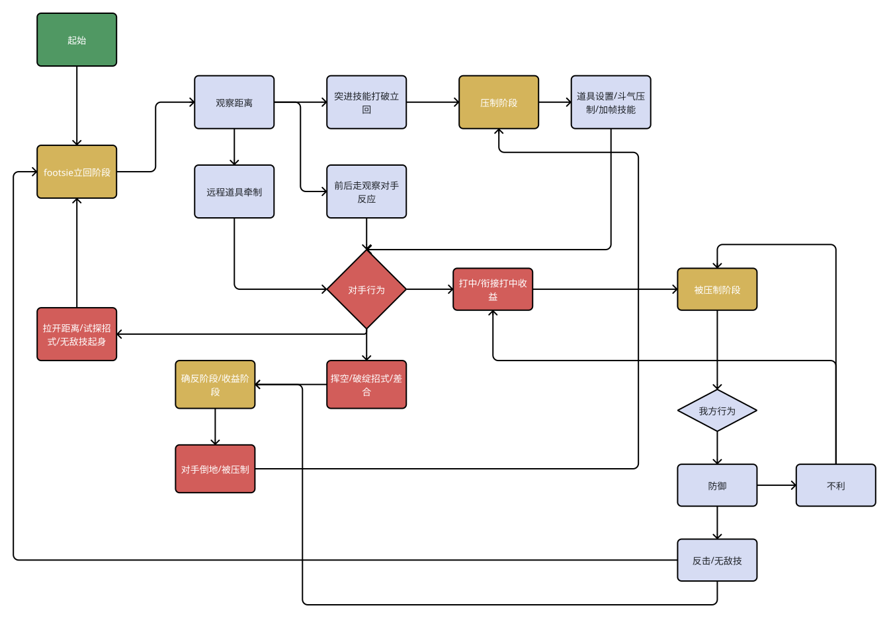
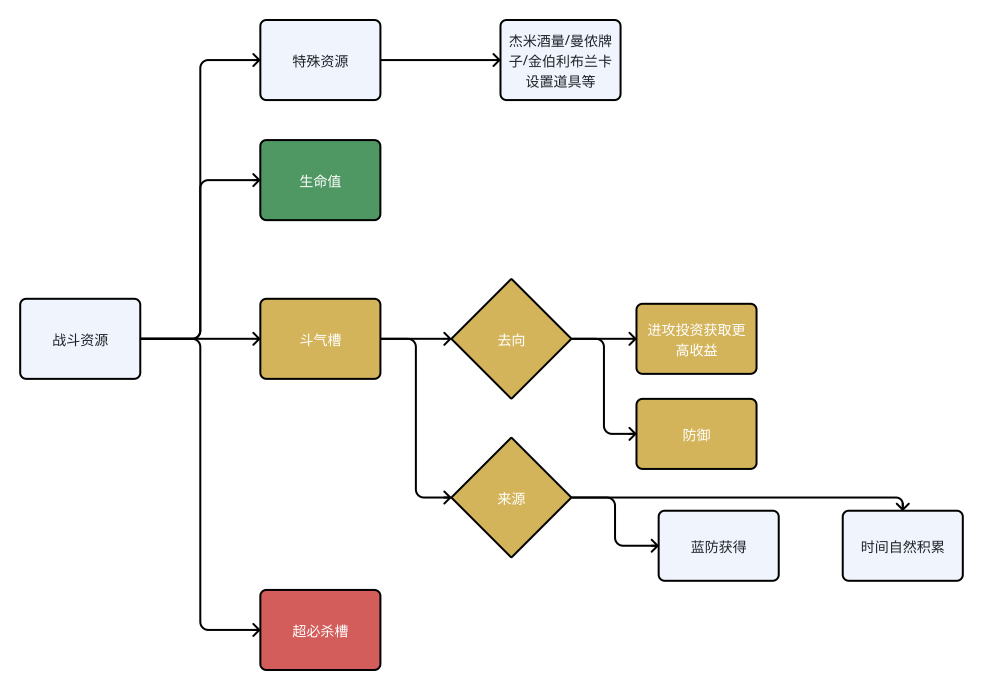

这次拆解走四层：战斗核心循环 → 博弈系统 → 战斗资源 → 角色设计差异。四层不是并列的章节，是同一条链——循环图规定了对局的形状，博弈系统是这个形状里的选择题，资源决定你有几个选项，角色差异则是对这四层各答一次卷。
两张图纸为矢量导出，按原始比例显示：图框内可上下左右拖动，文字不会糊；点图右下角的「打开原图」可在新窗口自由缩放。

| 颜色 | 性质 | 节点 |
|---|---|---|
| 绿 | 起点 | 起始 |
| 黄 | 阶段（对局所处的状态，不是某一次动作） | footsie 立回阶段、确反阶段／收益阶段、压制阶段、被压制阶段 |
| 蓝 | 我方选项（主动交出去的行为） | 观察距离、远程道具牵制、前后走观察对手反应、突进技能打破立回、我方行为、防御、反击／无敌技、不利、道具设置／斗气压制／加帧技能 |
| 红 | 判定与结果 | 对手行为（菱形判定口）、挥空／破绽招式／差合、拉开距离／试探招式／无敌技起身、打中／衔接打中收益、对手倒地／被压制 |
四个黄色节点是全文的骨架。后面所有分析——博弈、资源、角色差异——都在回答同一件事：怎么进某个黄格、怎么出某个黄格、进去值多少、出不去赔多少。
连线不是肉眼从图上数出来的：画板的原始节点数据里每条连线都自带起止节点 id，导出来就是一张边表。这一步的价值在第四节会看到——图的性质（几个判定口、几条逃逸边）只能从边表读，从图上看不出来。
| # | 起 | 止 | 含义 |
|---|---|---|---|
| 1 | 起始 | footsie 立回阶段 | 回合从立回开始 |
| 2 | footsie 立回阶段 | 观察距离 | 立回的第一步是量距离，不是出招 |
| 3 | 观察距离 | 远程道具牵制 | 出题选项 A |
| 4 | 观察距离 | 前后走观察对手反应 | 出题选项 B（不出招也算出题） |
| 5 | 观察距离 | 突进技能打破立回 | 出题选项 C |
| 6 | 远程道具牵制 | 对手行为 | |
| 7 | 前后走观察对手反应 | 对手行为 | |
| 8 | 对手行为 | 挥空／破绽招式／差合 | 判定出口 ①：对手露帧 |
| 9 | 对手行为 | 打中／衔接打中收益 | 判定出口 ②：对手吃到 |
| 10 | 对手行为 | 拉开距离／试探招式／无敌技起身 | 判定出口 ③：双方重置 |
| 11 | 挥空／破绽招式／差合 | 确反阶段／收益阶段 | 收益入口 ① |
| 12 | 确反阶段／收益阶段 | 对手倒地／被压制 | 收益的落地形式 |
| 13 | 对手倒地／被压制 | 压制阶段 | 起攻开始 |
| 14 | 压制阶段 | 道具设置／斗气压制／加帧技能 | 压制期出的题 |
| 15 | 道具设置／斗气压制／加帧技能 | 对手行为 | 压制重新汇入同一个判定口 |
| 16 | 突进技能打破立回 | 压制阶段 | 突进成功即进压制 |
| 17 | 打中／衔接打中收益 | 被压制阶段 | |
| 18 | 被压制阶段 | 我方行为 | |
| 19 | 我方行为 | 防御 | |
| 20 | 防御 | 反击／无敌技 | 逃逸出口 |
| 21 | 防御 | 不利 | 防御失败 |
| 22 | 不利 | 被压制阶段 | 循环锁死 |
| 23 | 不利 | 打中／衔接打中收益 | 被读到就吃收益 |
| 24 | 反击／无敌技 | footsie 立回阶段 | 回到立回 |
| 25 | 反击／无敌技 | 确反阶段／收益阶段 | 收益入口 ②：防守成功直接转成自己的收益 |
| 26 | 拉开距离／试探招式／无敌技起身 | footsie 立回阶段 | 回到立回 |
把 26 条边压成四句话，这张图就读完了：
| 阶段 | 进入条件 | 本阶段做什么 | 退出条件 | 待着的代价 |
|---|---|---|---|---|
| 立回 | 回合开始；双方重置；防守成功后退回 | 量距离、出小题、逼对手先动 | 判定口给出结果 | 时间；不动也在消耗自然回复 |
| 确反／收益 | 抓到对手挥空、破绽招、差合；或防成后反击 | 打一套连段，决定投多少斗气兑现 | 对手被打倒／被防住／被反制 | 投进去的斗气不可回收；打不满就是白给 |
| 压制 | 对手倒地或被逼入防御状态 | 持续出题：设置道具、斗气压制、加帧技能 | 对手答对（逃逸）或自己被打断 | 每轮出题都要花槽；被读到直接转成被压制 |
| 被压制 | 我方在判定口失败（被打中／衔接打中） | 只剩防御与逃逸两个选择 | 防御 → 反击／无敌技 | 槽空时逃逸选项消失，只剩硬吃 → 不利 → 继续被压制 |
循环持续至一方生命值被打空或时间结束。这里藏着一个设计决定：斗气槽每回合重置为满。资源是回合级而不是局级的，攒槽没有跨回合价值，所以系统一直在催你花。这和超必杀槽形成对照（见 3.5）：一个「不花就亏」，一个「花早了也亏」。两个槽的激励形状相反，玩家同时被两股力拉扯——这就是本作节奏感的来源。
分两块：打投防、距离与发生速度。这两块不是并列关系——打投防是「答哪道题」，距离与发生速度是「这道题来不来得及答」。
| 手段 | 克制 | 被克制 | 斗气账 | 收益 |
|---|---|---|---|---|
| 普通防御 | 打击 | 投技 | 持续扣槽 | 不掉血（槽未空时），但槽是隐性支出 |
| 蓝防 Drive Parry | 打击（含道具） | 投技 | 起手与按住持续扣槽；招架成功回复槽 | 帧优势等同防御，击退减半；完美招架（命中前 2 帧内）把对手弹成可确反 |
| 投技 | 防御、蓝防 | 打击（确反康）、拆投 | — | 蓝防状态下被投赔得更多：白烧槽＋起手／恢复帧吃惩罚 |
| 拆投 | 投技 | 打击（确反康） | — | 只有弱收益 |
| 打击（含差合、确反康） | 投技、拆投、突进恢复帧 | 防御 | — | 确反康额外给有利帧并抽对手槽（触发情形见 2.2） |
「蓝防无限克制打击」要加一个限定：无限，指的是面对打击时蓝防是净赚的；一旦对手把答案换成投技，同一个动作立刻变成净亏。所以蓝防的「无限」不是数值给的，是对手的选择给的——牵制方不需要打赢蓝防，只需要让对手相信蓝防安全，然后投他。
「投技自我拆解」是这一节最锋利的一条观察。投技的克制关系里包含它自己：攻方投、守方拆，两者用的是同一个动作窗口，结果由猜拳决定，而拆投成功只有弱收益。设计上这等于给攻方一个下限保底——猜拳输了不过是被推开来、掉一点伤害，猜拳赢了直接进压制。所以投技在图上承担的角色不是伤害手段，是判定口的强制器：它把对手从「用反应答」逼到「用预判答」。
把它接回循环图：边 8 → 11（对手行为 → 挥空／破绽／差合 → 确反阶段／收益阶段）是立回侧进入收益的唯一入口。也就是说，收益阶段不是打出来的，是「距离＋发生速度」这两条约束的差额算出来的。谁先把对手推进「打不到我又来不及收」的区间，谁就拿到收益段。这条单列成「距离与发生速度」是对的，它是收益阶段的生成器，不是打投防的补充说明。
| 层 | 判据 | 作用 |
|---|---|---|
| 发生速度差 | 短于人类反应阈值的招式（阈值帧数待实测） | 守方只能预判，不能反应 |
| 有效距离差 | 招式射程与突进位移量的分布 | 决定谁有资格出题 |
| 判定优先级 | 同一区域内发生快的先命中 | 让「更快」成为独立于「更远」的收益来源 |
确反康（Punish Counter）是这套比较的资源加成。游戏内确认的触发情形：蓝防的恢复帧；投技与打击技能挥空后的恢复帧；斗气迸放的恢复帧；以及反迸（两个迸放对撞）。这份列表的价值在于它把「抓恢复帧」做成了一个统一奖励——蓝防失败、投技落空、迸放被防住或撞掉，三件性质不同的事拿到的是同一种惩罚。所以「让对手白用一次斗气技」和「让对手空一个投」在收益结构上是等价的，差合因此不只是掉血，而是掉血＋改变对方的资源档位。
| 层 | 判据 | 玩家靠什么 | 图上位置 |
|---|---|---|---|
| 反应层 | 发生速度差 > 反应阈值 | 预判、读习惯 | 判定口「对手行为」 |
| 预判层 | 2–3 个选项的猜拳（投／拆／打；中段／下段；防／蓝防／不动） | 上一轮的记忆 | 压制期的出题节点 |
| 策略层 | 不需要当帧反应的决定 | 槽量、位置（版边／中央）、已倒地次数、剩余时间 | 全部节点，主要在「我方行为」 |
这三层的分界线就是那句话本身。「几乎无法反应」不是抱怨，是设计意图：把投技从反应层挪到预判层，猜拳才成立；猜拳成立，压制阶段才有内容。

同一格槽既是进攻燃料（绿冲、斗爆、迸放），又是防御货币（蓝防、反转），还在被动时被抽走（防御扣槽）。因此：
这一句话把资源层和循环层焊在一起。第一节表里「被压制」那一行的代价（槽空 → 逃逸消失 → 不利 → 继续被压制），全部来自这个耦合。图上把「防御」与「进攻投资获取更高收益」并列成斗气的两个去向，正是在说这件事。
去向（图上写了防御、进攻投资）还漏了两条抽取路径：
含义：斗气不是自我管理的预算，是可争夺的资源。
来源（图上写了蓝防获得、时间自然积累）还漏了一条，而且自然回复有个前提常被忽略：
来源侧同样有博弈。蓝防是唯一「防守即赚钱」的来源，所以围绕它的反制（投技）才那么贵。
| 动作 | 官方名 | 消耗 | 作用 |
|---|---|---|---|
| 蓝防 | Drive Parry | 起手扣槽、按住持续消耗；成功招架回复槽 | 自动格挡打击与道具，击退减半 |
| 完美招架 | Perfect Parry | 命中前 2 帧内蓝防 | 对手被弹开、陷入可确反，慢镜给足反击时间 |
| 绿冲 | Drive Rush | 裸出（蓝防派生）1 格／拳脚取消派生 3 格 | 快速前冲，落地后第一下普通技 +4 有利帧 |
| 斗气迸放 | Drive Impact | 1 格 | 带霸体的推进打击，可破防、撞墙 |
| 斗爆 | Drive Surge（OD 必杀） | 2 格 | 强化必杀，等同历代 EX 技 |
| 斗气反转 | Drive Reversal | 2 格 | 防御硬直中脱身反击，伤害低但破压制 |
| 满槽 | Drive Gauge | 6 格，每回合重置为满 | — |
绿冲的 1 格／3 格、确反康触发情形、气绝脱离方式、超必杀槽积累来源四项为游戏内实测确认；蓝防起手与按住的确切格数（第三方帧数据口径为起手半格、按住约每秒 0.3 格，1 格＝10,000 meter）与命中回槽量尚未逐项实测。
绿冲那条 +4 值得单看：它解释了「绿冲＝从立回进入压制、获得局部优势、强制猜拳」这句为什么成立。绿冲落地后自带有利帧，攻方必然处于对手必须答一道题的位置——猜拳不是绿冲的风险，是绿冲买到的东西。
而 1 格与 3 格之间是三倍的差价，这条差价正好切在循环的两个阶段上：裸出绿冲 1 格，是立回 → 压制的门票钱；拳脚取消绿冲 3 格，发生在已经拿到一次命中或防住之后，是收益与压制内部的追加投资。同一个动作挂在不同的边上，价格差三倍。三格是满槽的一半，付完之后防御侧的投资空间被压掉一半——蓝防起手即扣槽、斗气反转要 2 格，取消绿冲之后被反打，很可能已经没有反转可用。所以这条差价的真实含义是：贵的不是那三格，是花完之后剩下的三格。
街霸 6 的默认模式是反磨血——只要槽还在，防御不掉血，于是「远程道具无风险磨血」这条传统街霸的赢法被废掉了。槽打空进入气绝后，防御开始吃削血、受伤与眩晕加重、五种斗气技全部禁用，游戏切回传统街霸模式。
这句判断的设计价值比它本身更大：气绝不是一个惩罚状态，是一个模式切换器。它让「把对手的槽抽干」成为一条独立的胜利路线——你不必打空他的生命值，只要打空他的斗气，他的防御就从免费变成收费。前半句说「限制传统牵制魔血手段」，后半句其实是：魔血没有消失，被搬到了第二条血条上。
脱离机制实测确认：气绝期间自然回复继续，靠时间就能回满。这条把「模式开关」的强度定得很准——气绝是有时限的惩罚，不是不可逆的塌方。所以抽干对手槽的战术价值不在「终结他」，而在买一段窗口：这段时间里对手没有斗气技、防御开始掉血、伤害与眩晕加重，正是传统磨血压起身打法重新生效的窗口，窗口过去他又拿回全部答案。设计上的推论是：气绝时长就是这个模式的默认配额，调它等于直接调「传统打法能回来几次」，比逐个改招式更省成本。
| 斗气槽 | 超必杀槽 | |
|---|---|---|
| 决策频率 | 高频、小额（每几秒一次） | 低频、大额（一局几次） |
| 花光后果 | 气绝，惩罚 | 无惩罚，只是没有 |
| 攒着不用 | 满槽即浪费 | 回合结束清零 |
| 对应循环位置 | 四个阶段全部 | 主要是收益阶段的兑现点，以及被压制阶段的无敌逃逸 |
斗气催你花，超必杀等你攒。玩家同时被两股力拉扯，这是「资源感」的来源。
超必杀槽的积累来源，实测确认四项全部成立：命中对手、被命中、防御成功、蓝防与斗气技。把它和 3.2 的斗气收支并排看，会得到一条还没写出来的性质——两条槽在同一个动作上同时进出：
| 动作 | 斗气槽 | 超必杀槽 |
|---|---|---|
| 蓝防成功 | 回 | 涨 |
| 普通防御 | 扣 | 涨 |
| 被命中 | 扣 | 涨 |
| 命中对手 | 涨 | 涨 |
于是防守侧出现一条不均衡：蓝防是防守动作里唯一「两条槽同时往上涨」的路径（进攻侧命中对手也双涨，但那要占用一次收益），普通防御则是「斗气在掉、超必杀在涨」。这解释了为什么蓝防值得用投技去定价——它给的好处是双份的，反制它的收益也必须是双份的。
另一半解释是被压制阶段：挨打也在攒超必杀。所以「被压制」在循环图上不是纯损耗格，它的出口除了 防御 → 反击／无敌技，还有一条隐性的——攒够槽用带无敌的超必杀把压制打断。这条隐性出口正是第一节表里「被压制」那一行写了「槽空时逃逸选项消失」却仍然不至于必死的原因。
图上列了杰米酒量、曼侬牌子、金伯利与布兰卡的设置道具。按它们与循环的关系分三类更可用：
| 类型 | 例子 | 接进循环的位置 |
|---|---|---|
| 与通用资源直接兑换型 | 杰米酒量：酒量较低时部分招式命中会回斗气 | 多一个斗气来源，直接改变 3.2 那张收支表 |
| 设置／占地型 | 布兰卡蚁穴炸弹等（金伯利的归属待核对） | 对应图上边 14 的「道具设置」，是压制阶段的出题素材 |
| 累积解锁型 | 曼侬牌子：攒够才换出高收益动作 | 改变收益阶段的上限 |
设计含义：通用循环图不动，每个角色用私有资源决定自己走哪条边、在哪个阶段多拿一层收益。特殊资源因此不是「角色风味」，是循环图的私有边表。
角色差异不是招式差异，是在循环图上开关哪几条边。
直接对应 1.2 的边：
第 5 问最容易被忽略，但它决定一个角色的下限。四类原型里有三类都被标了「被压制阶段能力弱（缺少跳回立回的招式或性能弱）」——这一句是五问里最值钱的那一条。
| 原型 | 立回 | 进压制 | 压制出题 | 收益 | 逃出被压制 | 代表 |
|---|---|---|---|---|---|---|
| 标准 | 有远程道具 | 只有绿冲（斗气投资） | 中等，无设置类压起身 | 一般 | 有起身无敌技 | 隆、肯、卢克 |
| 突进／压制 | 弱或缺少牵制手段，主动破坏立回 | 突进能力强、手段多 | 出题能力最强（设置／多种起攻） | 单次收益偏低 | 弱或缺 | 金伯利、DJ、亚斯敏 |
| 重型 | 移动弱、缺牵制，拳脚判定撑住立回 | 靠对手进来 | 强（指令投等） | 火力恐怖 | 弱或缺 | 桑吉尔夫等 |
| 牵制 | 强，牵制手段丰富 | 少（移动弱） | 多种出题手段 | 正常或偏低 | 弱，但有独特转换攻防手段（换位等） | 达尔西姆 |
标准角色的定义方式值得单独看：它不是「各项中等」，而是五个问题都有及格答案——有道具、有绿冲、有起身无敌技、收益一般、压制中等。标准角色是这张表的基准解，其他三类都是「牺牲某一问换另一问」。把「具有起身无敌技（从被压制阶段跳回立回阶段的招式）」写进标准角色的定义里，等于承认了：能不能逃出被压制，是角色是否完整的默认线。
设计时最该盯的是这三点，而不是三角本身：